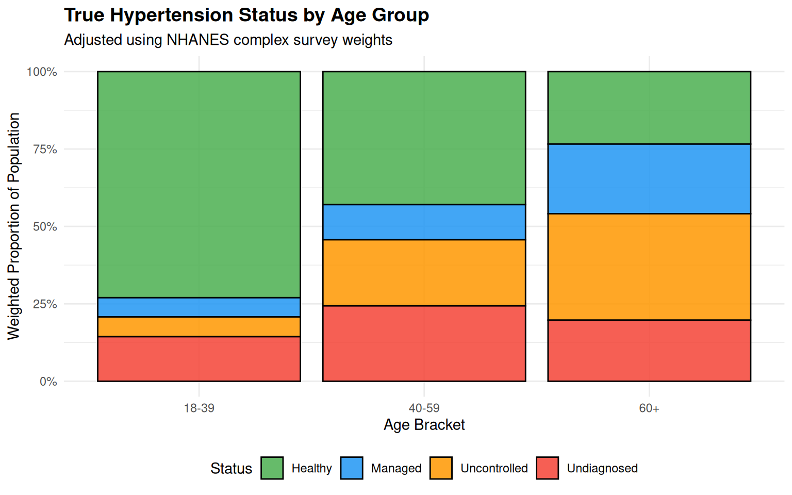
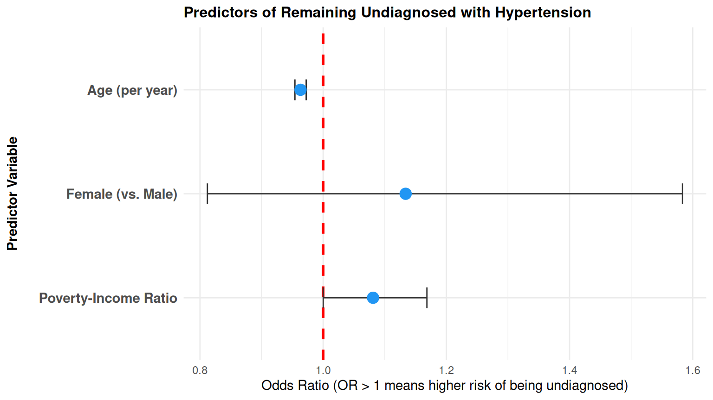

This study analyzes nationally representative survey data from the National Health and Nutrition Examination Survey (NHANES) to evaluate demographic patterns in hypertension and identify key risk factors associated with remaining undiagnosed.
Using proper survey design adjustments (psu, strata, and weight_mec), I evaluate biological blood pressure readings against self-reported diagnoses and fit a weighted logistic regression model.
Data Pipeline & Survey Methodology
Ingest (01_ingest.R): Downloaded demographic (DEMO), blood pressure (BPX), and questionnaire (BPQ) datasets directly from CDC servers via nhanesA.
Clean (02_clean.R): Standardized blood pressure measurements, filtered for adult records (\(\ge 18\)), and categorized patients into four distinct hypertension states: Healthy, Managed, Uncontrolled, and Undiagnosed.
Descriptive (03_descriptive.R): Constructed a complex survey design object using srvyr and calculated population-weighted demographic summaries.
Inferential (04_inferential.R): Restricted analysis strictly to the biologically hypertensive subpopulation using domain estimation (preserving full PSU/Strata variance architecture) and ran a survey-weighted logistic regression (svyglm).
Survey-weighted proportions across age brackets demonstrate a clear pattern: while older adults (\(\ge 60\)) have higher overall rates of hypertension, the proportion of undiagnosed cases peaks significantly in mid-adulthood (\(40-59\)).
Code
# Calculate weighted proportions by age bracket and statusdf_plot <- full_svy %>%group_by(age_bracket, htn_status) %>%summarize(prop =survey_mean(), .groups ="drop")ggplot(df_plot, aes(x = age_bracket, y = prop, fill = htn_status)) +geom_col(position ="fill", color ="black", alpha =0.85) +scale_y_continuous(labels = scales::percent) +scale_fill_manual(values =c("Healthy"="#4CAF50","Managed"="#2196F3","Uncontrolled"="#FF9800","Undiagnosed"="#F44336" ) ) +theme_minimal() +labs(title ="True Hypertension Status by Age Group",subtitle ="Adjusted using NHANES complex survey weights",x ="Age Bracket",y ="Weighted Proportion of Population",fill ="Status" ) +theme(plot.title =element_text(face ="bold", size =14),legend.position ="bottom" )

Figure 1: Weighted Proportion of Hypertension Status by Age Group
2. Predictors of Remaining Undiagnosed
The table below details the survey-adjusted Odds Ratios for predicting whether a biologically hypertensive individual remains undiagnosed:
Code
model_results %>%filter(term !="(Intercept)") %>%mutate(term =case_when( term =="age"~"Age (per year)", term =="genderFemale"~"Female (vs. Male)", term =="income_ratio"~"Poverty-Income Ratio",TRUE~ term ),p_formatted =ifelse(p.value <0.001, "< 0.001", sprintf("%.3f", p.value)) ) %>%select(Predictor = term, `Odds Ratio (OR)`= estimate, `95% CI Lower`= conf.low, `95% CI Upper`= conf.high, `p-value`= p_formatted ) %>%kable(digits =3, caption ="Survey-Weighted Logistic Regression Model Results")
Survey-Weighted Logistic Regression Model Results
Predictor
Odds Ratio (OR)
95% CI Lower
95% CI Upper
p-value
Age (per year)
0.963
0.954
0.972
< 0.001
Female (vs. Male)
1.134
0.812
1.583
0.428
Poverty-Income Ratio
1.081
1.000
1.168
0.050
Code
plot_data <- model_results %>%filter(term !="(Intercept)") %>%mutate(term =case_when( term =="age"~"Age (per year)", term =="genderFemale"~"Female (vs. Male)", term =="income_ratio"~"Poverty-Income Ratio",TRUE~ term ),term =factor(term, levels =c("Poverty-Income Ratio", "Female (vs. Male)", "Age (per year)")) )ggplot(plot_data, aes(x = estimate, y = term)) +geom_vline(xintercept =1, linetype ="dashed", color ="red", linewidth =1) +geom_errorbar(aes(xmin = conf.low, xmax = conf.high), width =0.2, color ="#333333") +geom_point(size =4, color ="#2196F3") +scale_y_discrete(expand =expansion(mult =c(0.3, 0.3))) +theme_minimal() +labs(title ="Predictors of Remaining Undiagnosed with Hypertension",x ="Odds Ratio (OR > 1 means higher risk of being undiagnosed)",y ="Predictor Variable" ) +theme(plot.title =element_text(face ="bold", size =12),axis.text.y =element_text(size =11, face ="bold"),axis.title.y =element_text(size =11, face ="bold", margin =margin(r =15)) )

Figure 2: Forest Plot of Odds Ratios for Undiagnosed Hypertension
3. Model Interpretation
Based on the survey-weighted logistic regression, I observed the following within the hypertensive subpopulation:
Age: There is a statistically significant negative association between age and the odds of remaining undiagnosed (OR = 0.963, p < 0.001). As age increases, patients are significantly less likely to remain undiagnosed, likely due to more frequent interactions with the healthcare system.
Income Ratio: Higher income shows a slight, marginally significant positive association with remaining undiagnosed (OR = 1.08, p = 0.0498).
Gender: There is no statistically significant difference in diagnosis rates between females and males in this cohort (OR = 1.13, p = 0.428), as the 95% confidence interval widely crosses 1.0.
Conclusion & Health Policy Implications
Screening Focus: Outreach campaigns should target young and middle-aged adults (ages 18–59), who exhibit high proportions of undiagnosed hypertension despite lower overall prevalence.
Methodological Rigor: Standard non-survey analysis would misestimate standard errors; maintaining full PSU/Strata architecture via domain filtering (srvyr::filter) was essential to ensuring mathematically valid statistical inferences.